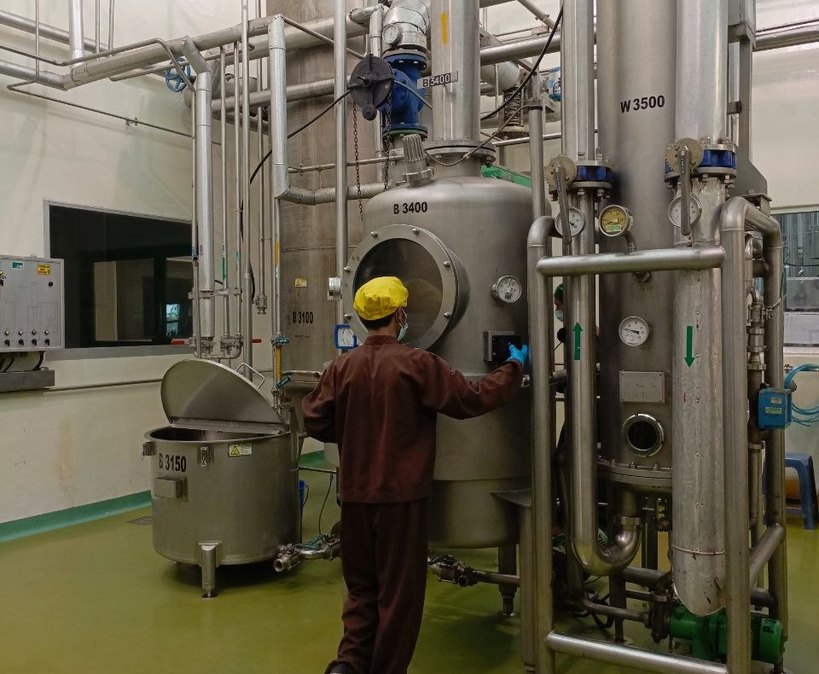
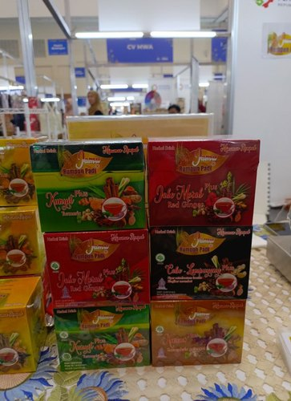
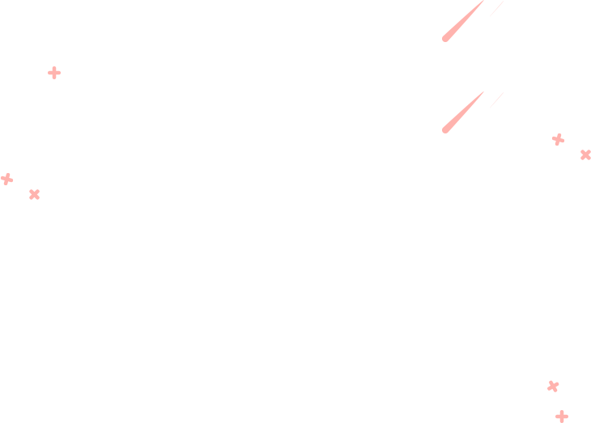
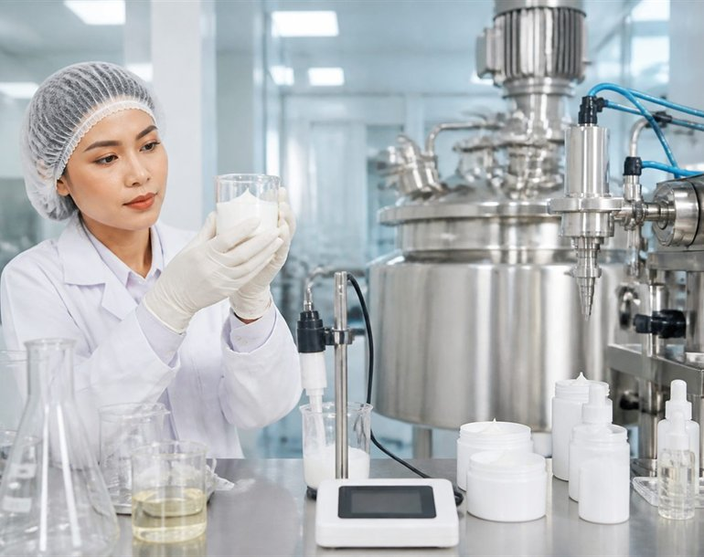
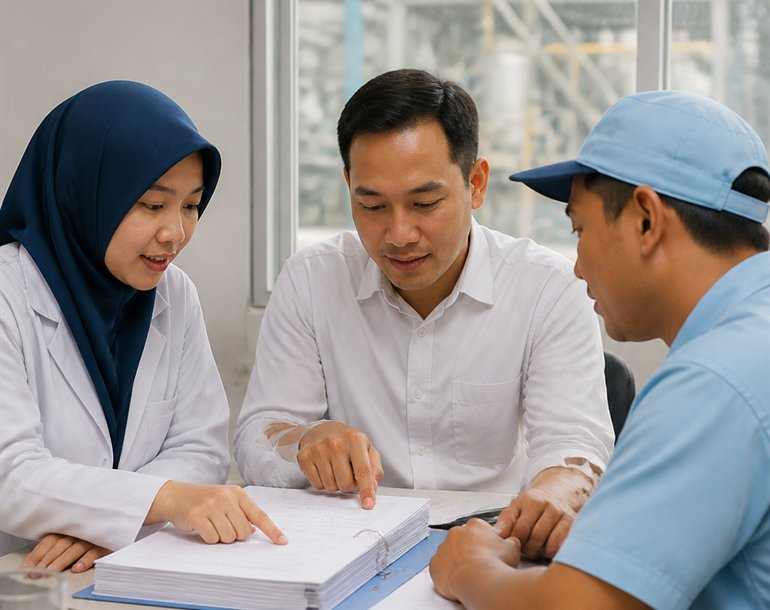
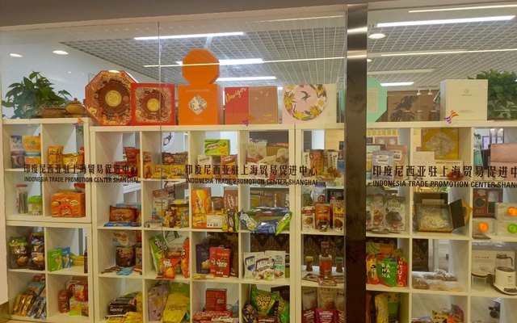

Praktisi Ahli Regulasi
Siap Audit & Izin Edar
Satu alur dari legalitas dasar (NIB), izin edar (P-IRT, BPOM MD, PSAT, Halal SJPH), hingga penyiapan produk masuk retail modern dan ekspor.
Pemahaman mendalam perizinan BPOM MD/ML, pemenuhan CPPOB, izin edar PSAT/SPPB-PSAT komoditas, hingga standar kosmetik CPKB.
Bukan sekadar dokumen. Kami membantu penataan tata ruang fasilitas, SOP, uji laboratorium, hingga simulasi audit bersama tim Anda.
Pemisahan jelas dan transparan antara biaya resmi pemerintah/otoritas dan fee pendampingan konsultan tanpa biaya tersembunyi.

HACCP Codex, ISO 22000 & FSSC 22000, ISO 9001, pemenuhan standar GMP – CPPOB – PMR
Standar InternasionalRegistrasi akun perusahaan, uji lab produk, izin edar BPOM MD/ML, review desain label kemasan
BPOM MD/MLSistem Jaminan Produk Halal (SJPH), pendampingan sertifikasi reguler & self-declare, kepatuhan Wajib Halal 2026
Wajib Halal 2026Izin edar PSAT-PDUK/PD, sertifikasi SPPB-PSAT OKKPD untuk beras, rempah, kopi, dan pangan segar
Komoditas & EksporImplementasi GMP Kosmetik (ISO 22716), pemenuhan CPKB, penyusunan DIP, notifikasi BPOM
CPKB & KosmetikGap assessment fasilitas, audit internal berkala, penutupan temuan (CAPA), persiapan audit sertifikasi
Evaluasi & CAPAIn-house training regulasi pangan & kosmetik, implementasi sistem, pembekalan Auditor & Penyelia Halal
Training PraktisiPendampingan persyaratan & sertifikasi NKV untuk pangan asal hewan (daging, olahan daging, sarang walet)
Pangan Hewani
FnD System hadir menjawab tantangan lebih dari 1,7 juta pelaku industri pangan dan kosmetik di Indonesia yang membutuhkan pendampingan nyata untuk naik kelas. Mulai dari pengurusan NIB, SPP-PIRT, izin edar BPOM MD/ML, sertifikasi Halal SJPH resmi, izin komoditas PSAT/SPPB-PSAT, hingga sertifikasi internasional HACCP dan ISO 22000.
Didukung tim konsultan praktisi berpengalaman lebih dari 10 tahun, kami memadukan kepatuhan regulasi teknis dengan penataan fasilitas dan dokumen sistem yang aplikatif. FnD System berkomitmen menjadi mitra terpercaya agar produk Anda siap lolos audit, berdaya saing di retail modern, dan menembus pasar ekspor.
Kami memegang prinsip transparansi penuh: sertifikat resmi diterbitkan oleh otoritas terkait (BPOM, BPJPH, KAN, OKKPD), sementara peran kami adalah memastikan bisnis Anda 100% siap memenuhi standarnya.
Manufaktur, F&B, & UMKM
Pangan, Halal, & Kosmetik
Tim konsultan praktisi





Kompetensi kami dibangun dari pengalaman mendalam lintas industri, mulai dari UMKM pangan naik kelas, produsen komoditas ekspor, hingga industri manufaktur dan kosmetik.
Setiap pendampingan berjalan dalam enam tahapan terstruktur, memastikan proses transparan, terukur, dan tepat sasaran.
Menganalisis jenis produk, skala usaha, kategori risiko, dan target regulasi (P-IRT, MD, Halal, atau PSAT).
Memetakan kesiapan fasilitas produksi dan dokumen saat ini terhadap standar regulasi yang dituju.
Menyusun SOP, manual mutu, instruksi kerja, form pencatatan, dan verifikasi label sesuai aturan BPOM.
Pelatihan langsung ke tim produksi, penataan tata ruang higienis, dan simulasi alur proses kerja.
Melakukan simulasi audit internal dan menutup temuan ketidaksesuaian sebelum pengajuan resmi ke otoritas.
Mendampingi proses registrasi di portal otoritas hingga verifikasi audit selesai dan izin/sertifikat terbit.


Solusi Berjenjang, Transparan, & Bebas Biaya Tersembunyi. Pilihan paket dirancang sesuai fase pertumbuhan bisnis Anda, dari legalitas awal hingga siap ekspor.
FnD System bertindak sebagai konsultan pendamping persiapan sistem, bukan penerbit sertifikat. Biaya resmi pihak ketiga/pemerintah (seperti uji laboratorium terakreditasi, PNBP, biaya audit LPH halal, atau sertifikasi KAN) dibayarkan langsung sesuai tarif resmi berlaku. Biaya paket di atas merupakan estimasi fee jasa pendampingan profesional.
Tersedia Layanan Retainer Berkelanjutan: Mulai Rp 1 – 3 jt/bulan untuk audit internal berkala, pendampingan perpanjangan izin, update kepatuhan regulasi, dan konsultasi prioritas.





Panduan praktis, perubahan regulasi terkini, dan strategi kepatuhan mutu untuk pelaku usaha pangan & kosmetik.

Kewajiban sertifikasi halal untuk pelaku UMK pangan resmi berlaku. Simak alur SJPH, opsi self-declare vs reguler, dan langkah pemenuhannya.
Konsultasi Halal →
Kapan produk harus beralih ke BPOM MD? Pelajari syarat tata ruang CPPOB, uji laboratorium, dan standar kemasan untuk tembus retail modern.
Konsultasi BPOM →
Panduan registrasi izin edar PSAT-PDUK/PD dan sertifikasi SPPB-PSAT untuk komoditas beras, biji-bijian, kopi, dan rempah siap ekspor.
Konsultasi PSAT →* Artikel dan wawasan regulasi disusun berdasarkan rujukan resmi BPOM, BPJPH, Badan Pangan Nasional, dan standar Codex/ISO.
Punya pertanyaan tentang sertifikasi halal, perizinan BPOM MD, PSAT komoditas, atau persiapan audit HACCP/ISO? Konsultasi awal gratis bersama tim konsultan kami akan membantu memetakan langkah tepat dan estimasi investasi terbaik untuk usaha Anda.
Jl. Contoh Industri No. 12, Jakarta Selatan 12560
Alamat contoh — akan diperbarui dengan lokasi resmi.